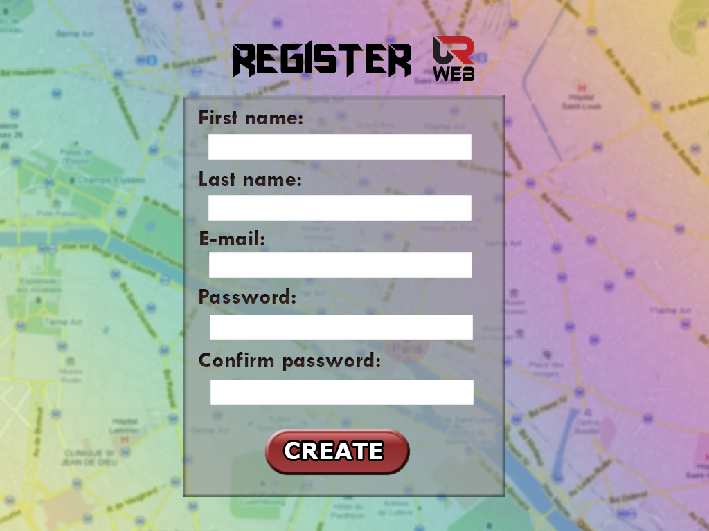
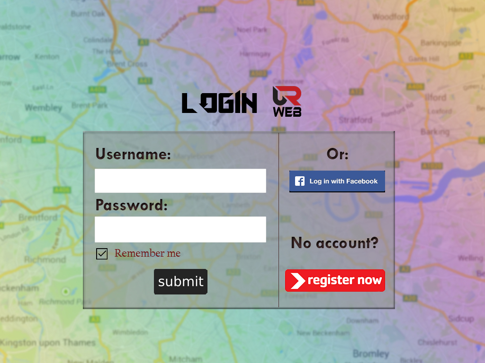
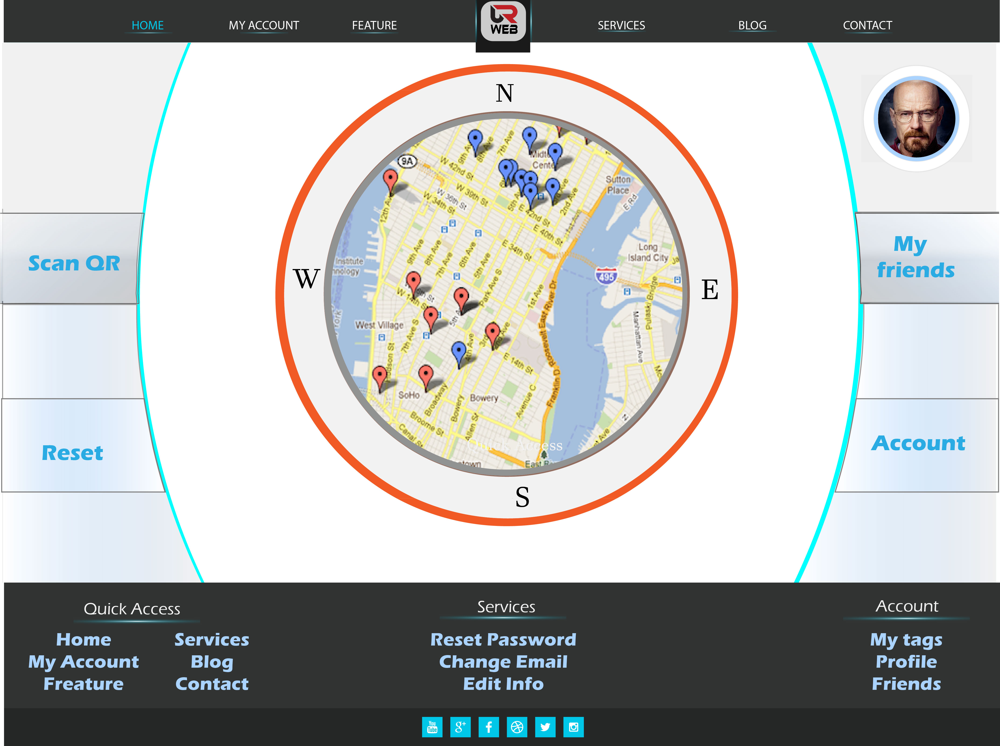
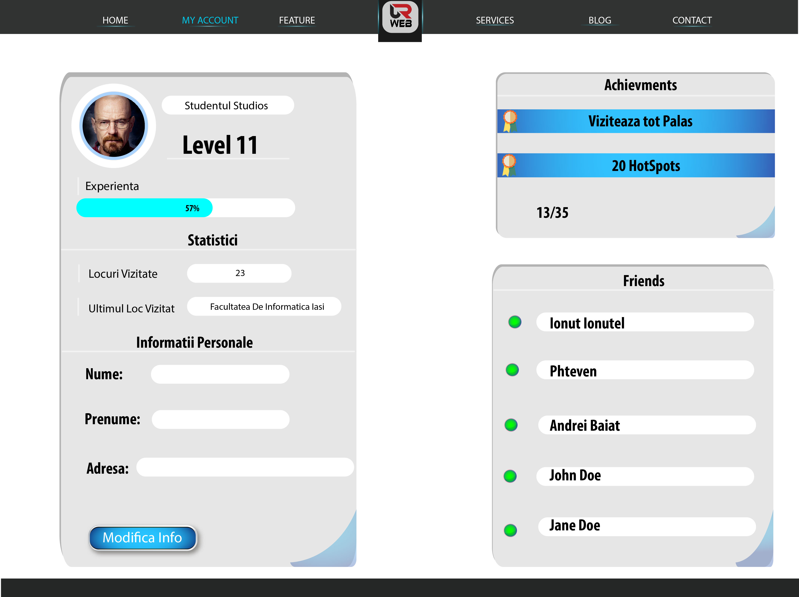

Aplicatia QR-web are rolul de a oferi informatii despre anumite locatii care sunt fregventate de diversi utilizatori.
In datele retinute de aplicatie se vor regasi atat mail-ul unei anumite persoane, care va avea rol de identificator pentru aceasta, cat si datele reale ale acesteia (nume/prenume) ce ajuta utilizatorii in identificarea prietenilor si a locatiilor fregventate de acestia. Totodata aceasta poate pune la dispozitie si un meniu ce contine un numar mai restrans de functionalitati destinat persoanelor ce nu vor sa isi asocieze un cont in cadrul aceste aplicatii
Orice utilizator va putea afla in timp real atat informatii utile in legatura cu locatia in care se afla ci si care sunt cele mai fregventate locatii din zona.Totodata, fiecare scanare a unui QR determina incrementarea numarului de accesari pentru acea locatie si cresterea level-ului utilizatorului, atribut ce va arata preferintele acestuia.
In cadrul aplicatiei vor putea fi salvati in diverse grupuri si prietenii fiecarei persoane cu toate informatiile acestora din baza de date.Totodata QR-web poate determina in orice situatie si cea mai cautata locatie din luna precedenta.
Tehnologii folosite
In implementarea aplicatiei vom utiliza standardele actuale in materie de web development, tehnologii precum HTML5, CSS3, JavaScript si PHP dar si diverse APIuri ce ne vor ajuta sa obtinem functionalitatile propuse.
PHP
PHP (Php:Hypertext Preprocessor) este un limbaj de programare server-side, de tip script, interpretat. Folosit inițial pentru a produce pagini web dinamice, este folosit pe scară largă în dezvoltarea paginilor și aplicațiilor web. Este unul din cele mai importante limbaje de programare web open-source și server-side, existând versiuni disponibile pentru majoritatea web serverelor și pentru toate sistemele de operare. Pentru a ne ajuta in implementarea aplicatiei am decis sa utilizam frameworkul PHP Zend. Zend este un framework web orientat obiect pentru php disponibil gratuit (open-source).
JavaScript
JavaScript (JS) este un limbaj de programare orientat obiect bazat pe conceptul prototipurilor. Este folosit mai ales pentru introducerea unor funcționalități în paginile web, codul Javascript din aceste pagini fiind rulat de către browser.
Cea mai des întâlnită utilizare a JavaScript este în scriptarea paginilor web. Programatorii web pot îngloba în paginile HTML script-uri pentru diverse activități cum ar fi verificarea datelor introduse de utilizatori sau crearea de meniuri și alte efecte animate. Vom utiliza JavaScript pentru realizarea anumitor animatii si efecte vizuale dar si pentru accesarea unor functii din APIurile pe care le vom utiliza.
Facebook Web SDK
Vom utiliza SDKul oferit de Facebook pentru a oferi utilizatorului posibilitatea de a se inregistra folosind contul sau si de a putea posta/distribui informatii despre aplicatie si/sau lucruri din aplicatie.
Google Maps API
Google Maps va fi componenta de baza a aplicatiei. Peste hartile oferite de APIul JavaScript vom introduce functionalitatile aplicatiei noastre in timp ce Google Places API ne va returna informatii relevante locatiilor corespunzatoare.
QR Web Api
Acest API va fi utilizat pentru a crea si a scana coduri QR ce ne vor ajuta sa identificam locatiile corespunzatoare in baza noastra de date.
Modelarea datelor
In cadrul aplicatiei QR-web vom utiliza pentru stocarea datelor serverul de baze de date Oracle.
Pentru a memora datele necesare functionarii aplicatiei, am propus o schema de baze de date bazata pe 6 tabele, dupa cum urmeaza:
Tabela Useri - va contine conturile tuturor userilor. Aceasta va utiliza mail-ul fiecarui utilizator ca principalul mod de identificare al acestuia.
Useri
Campuri
Tip
mail
varchar
password
varchar
user_facebook
varchar
Tabela Persoane - ofera informatii despre persoana reala ce utilizeaza contul identificat prin acelasi mail in tabela useri. Astfel aceasta poate fi utilizata pentru a crea in cadrul aplicatiei liste de prieteni si a retine preferintele fiecaruia prin intermediul unui level.
Persoane
Campuri
Tip
mail
varchar
nume
varchar
prenume
varchar
level
number
Tabela Prieteni - va retine prin intermediul mail-ului, pentru fiecare user, fiecare persoana pe care aceasta o adauga la lista de prieteni.
Prieteni
Campuri
Tip
mail
varchar
mail_prieten
varchar
Tabela Locatii - ofera informatii in legatura cu toate locatile ce detin un QR si sunt integrate in apicatie si tipul acestora(Exemplu: cafenea/statie alimentare/informatii/monument/etc.). Totodata aceasta retine un numar de accesari pentru fiecare locatie in parte pentru a putea fi identificate zonele cele mai "cautate"(all time) ale orasului.
Locatii
Campuri
Tip
QR
varchar
nume_Locatie
varchar
tip
varchar
nr_accesari
number
Tabela Informatii - retine link-uri utile catre pagini destinate locatiilor respective ce ofera inforatii despre acestea.
Informatii
Campuri
Tip
QR
varchar
link
varchar
Tabela Vizitatori - retine un xp curent al locatiei prin care doreste sa furnizeze informatii in legatura cu numarul de persoane ce vin in acea locatie pe o anumita perioada de timp bine determinata (Exemplu: luna precedenta).
Vizitatori
Campuri
Tip
QR
varchar
data
date
xp_curent
number
Arhitectura
Presentation
Presentation va fi pagina cu care utilizatorul va interactiona pentru prima data.
Pagina in sine cuprinde un sumar al aplicatiei: ceea ce ofera, ce avantaje aduce si cum se foloseste. Imaginile si textul vor
fi sugestive pentru ca utilizatorul sa se familiarizeze cu aplicatia pe care o va folosi.
Pagina va contine doua butoane: Login si Register.
Login va oferi utilizatorul optiunea de a se loga fie cu contul de Facebook, fie cu un cont deja creat.
Register este optiunea oferita utilizatorilor sa isi creeze un cont via e-mail, fara sa fie nevoiti sa se foloseasca de
contul de Facebook.
Register

Pagina ofera utilizatorului posibilitatea de inregistrare. Formularul are nevoie de urmatoarele date:
Nume
Prenume
E-mail
Parola
Confirmarea Parolei
Dupa introducerea datelor si apasarea butonului "CREATE", contul este creat si utilizatorul va fi dus pe pagina
principala, de unde va putea folosi aplicatia.
Login

Pagina necesita introducerea de date pentru ca un utilizator sa se conecteze la aplicatie.
Pentru acest lucru este nevoie de:
Username/E-mail
Parola
..sau logarea folosind Facebook, folosind butonul din dreapta formularului de Login.
Daca logarea are loc cu succes, utilizatorul va fi dus pe pagina principala, de unde va putea folosi aplicatia.
Homepage

Pagina este structurata in asa fel incat utilizatorul sa reuseasca cu usurinta sa gestioneze optiunile.
Pe mijoc va aparea harta pe o anumita raza, care arata disponibilitatile din jur.
Pe margini, sunt diferite optiuni pe care utilizatorul le poate accesa, acestea fiind:
Scan QR: Aceasta optiune ofera utilizatorului posibilitatea de a scana un cod QR. Pe baza acestuia,
inregistreaza locatia ca si o locatie vizitata si ofera un anumit numar de "experienta", pe care
utilizatorul il va acumula inspre avansarea catre urmatorul level.
Reset: Daca utilizatorul a scanat un cod QR si doreste reintoarcerea la locatia sa curenta, va apasa
butonul si va fi harta actualizata cu punctul in care se afla.
My friends: Aplicatia ofera posibilitatea de a adauga prieteni iar butonul respectiv va arata prietenii
adaugati si locurile unde au fost recent.
Account: Butonul ofera utilizatorului redirectionarea catre pagina lui personala unde va putea sa isi
schimbe datele sau sa isi verifice nivelul si experienta acumulata.
In partea de sus va exista o bara de optiuni:
Home : pagina cu harta pe mijloc, cea curenta in momentul de fata.
My account: Acelasi lucru cu butonul Account din dreapta hartii.
Feature : Loc unde utilizatorul va putea vizualiza locurile sale preferate si unde primeste
unele notificari/stiri despre aceste locuri.
Services: Pagina unde exista descrierea aplicatiei.
Blog: Aici, utilizatorii pot accesa diferite QA-uri, in caz ca intampina probleme la folosirea
aplicatiei.
Contact: Utilizatorul poate contacta administratorii aplicatiei in cazul unor posibile erori.
In josul paginii, vor fi afisate optiuni pe care utilizatorul vrea sa le acceseze mai rapid decat navigarea
prin mai multe pagini.
Account Page

Aceasta pagina ofera informatii despre contul utiizatorului.
Sunt prezente avatarul, nivelul, experienta,statistici despre ultimele locuri vizitate si cate locuri au fost vizitate
pana in prezent.
Se pot schimba datele personale, se pot vizualiza ultimele realizari si lista de prieteni.